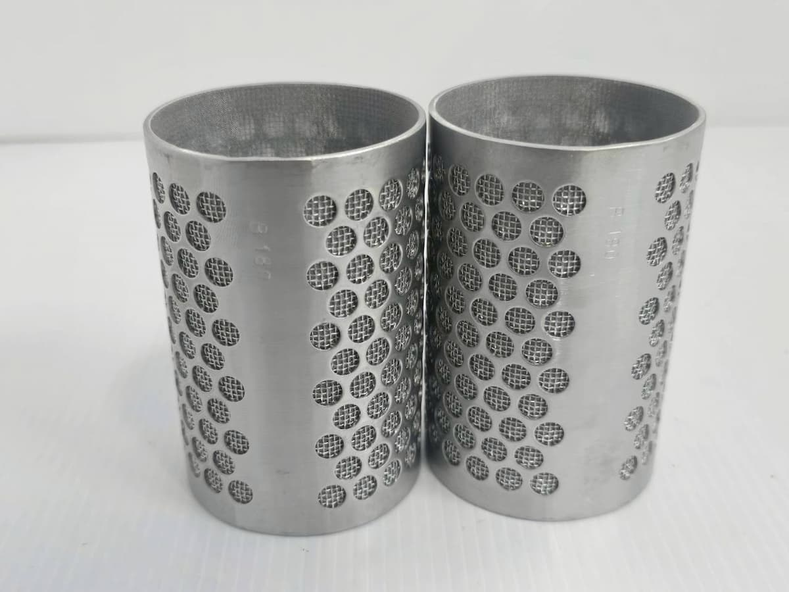
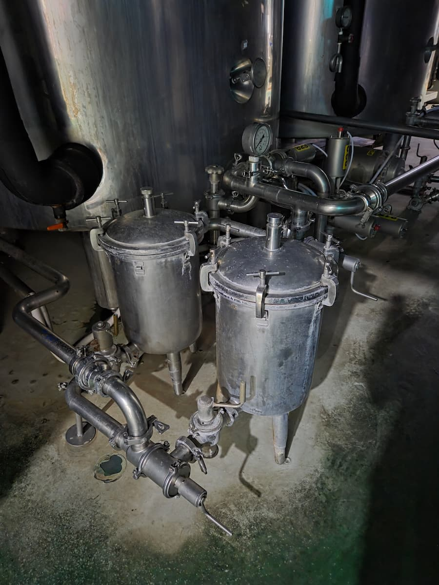
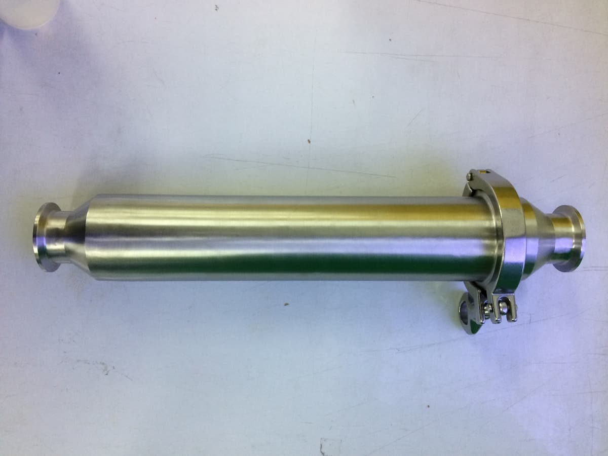
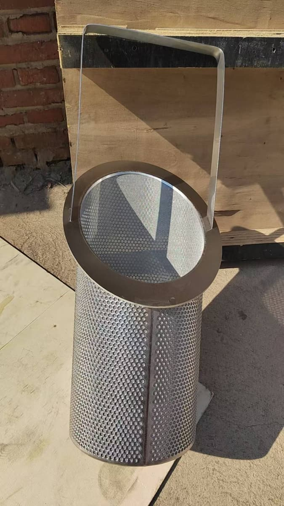
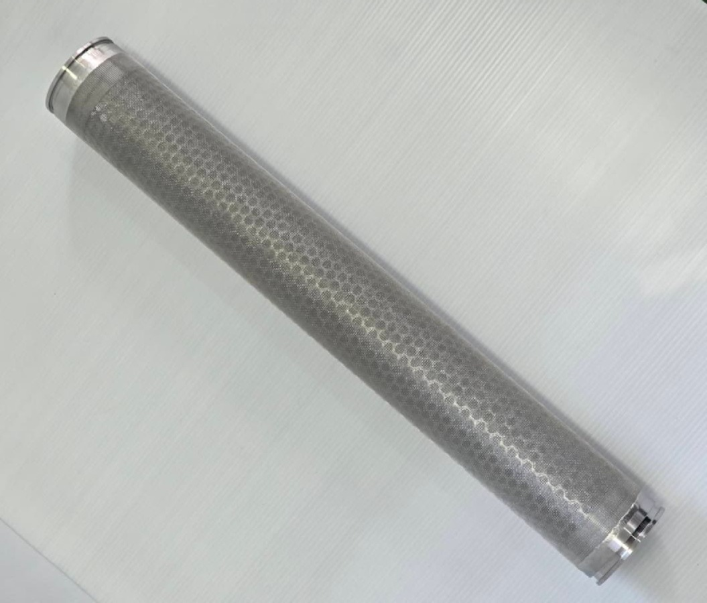
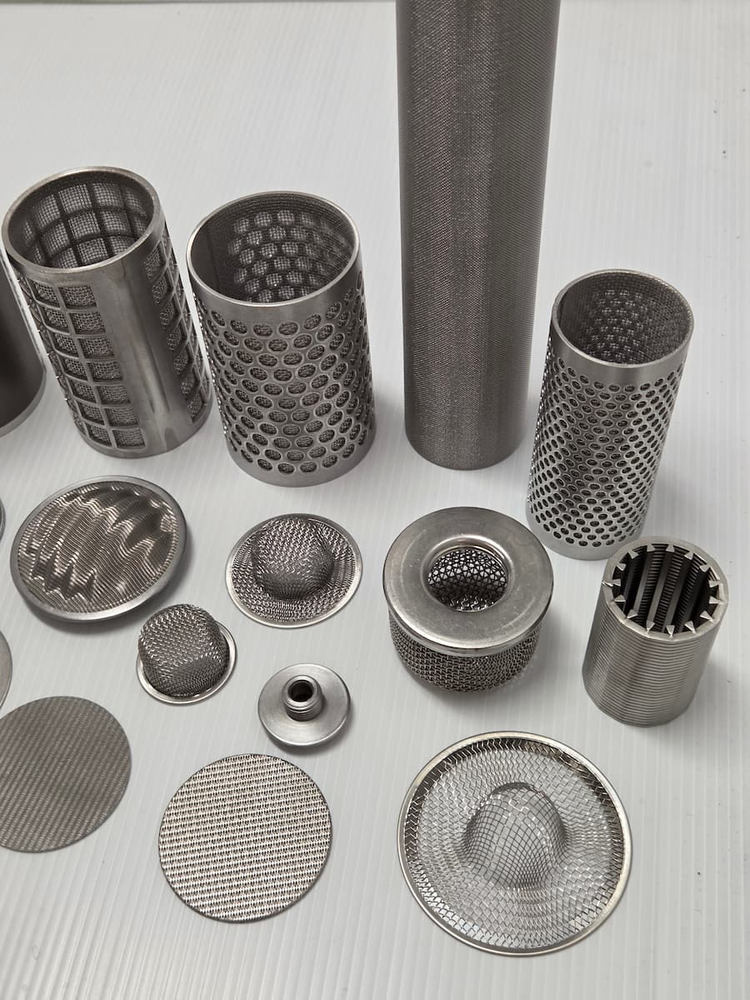
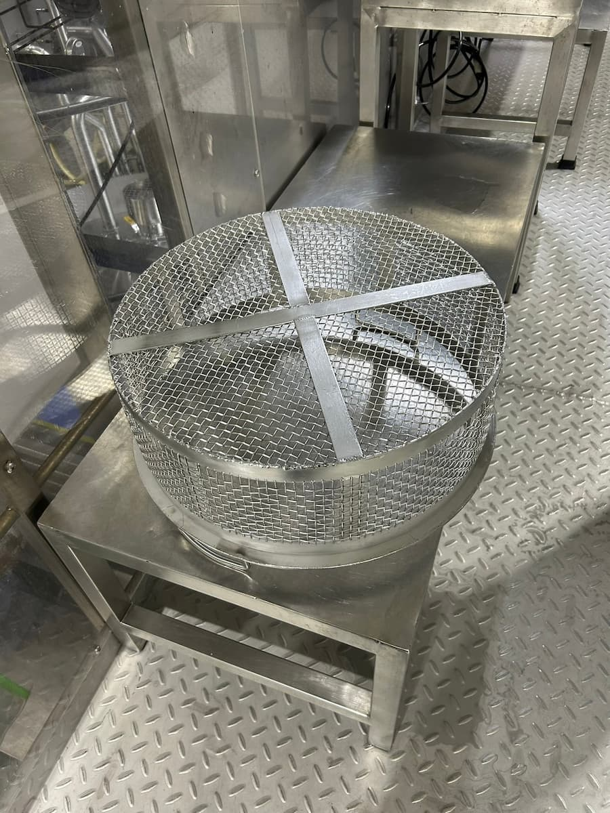

Beyond the Filter — Engineering for You
ออกแบบและผลิตฟิลเตอร์อุตสาหกรรมคุณภาพสูง ให้ตรงกับความต้องการทุกรูปแบบ พร้อมงานออกแบบวิศวกรรมครบวงจร สำหรับโรงงาน กลุ่มอุตสาหกรรมทุกประเภท
ฟิลเตอร์อุตสาหกรรมคุณภาพสูง ออกแบบและผลิตตามความต้องการของงาน

ไส้กรองตะแกรงผนึกหลายชั้น แข็งแรง ทนแรงดันและอุณหภูมิสูง ล้างทำความสะอาดและใช้ซ้ำได้

ถังกรองสำหรับติดตั้งไส้กรอง ออกแบบตามขนาดท่อและอัตราการไหลของแต่ละหน้างาน

ฟิลเตอร์แบบติดตั้งในแนวเส้นท่อ กรองของไหลโดยตรงในระบบ ประหยัดพื้นที่ติดตั้ง

ตะกร้ากรองสิ่งแปลกปลอมในเส้นท่อ ป้องกันความเสียหายของปั๊มและอุปกรณ์ปลายทาง
แผ่นกรองสำหรับงานกรองละเอียด ผลิตได้หลายขนาดและหลายระดับความละเอียด

ไส้กรองทรงกระบอก เปลี่ยนง่าย รองรับการใช้งานหลากหลายในระบบกรองอุตสาหกรรม

รับออกแบบและผลิตฟิลเตอร์ตามแบบหรือตามตัวอย่าง โดยทีมวิศวกรผู้เชี่ยวชาญ

อุปกรณ์และงานผลิตอื่นๆ ที่เกี่ยวข้องกับระบบกรองอุตสาหกรรม สอบถามเพิ่มเติมได้ที่ฝ่ายขาย
ครบวงจรตั้งแต่ผลิต ออกแบบ ติดตั้ง จนถึงดูแลตลอดอายุการใช้งาน
ผลิตฟิลเตอร์
ผลิตฟิลเตอร์คุณภาพสูงตามสเปคการใช้งานจริงของลูกค้า — ผลิตให้พอดีกับงานจริงของคุณ
ออกแบบทางวิศวกรรม
ออกแบบระบบอุตสาหกรรมตามมาตรฐานสุขลักษณะ — ออกแบบด้วยมาตรฐานระดับยุโรป
งานติดตั้ง
ติดตั้งเครื่องจักรและอุปกรณ์ในโรงงานโดยทีมช่างมืออาชีพ — ติดตั้งปลอดภัย ตรงเวลา ได้มาตรฐาน
บำรุงรักษาและบริการหลังการขาย
ดูแลเครื่องจักรในกระบวนการผลิตและบริการหลังการขาย — เคียงข้างตลอดอายุการใช้งาน
เราไม่ได้ขายแค่ฟิลเตอร์ แต่คือวิศวกรรมที่เข้าใจงานของคุณ
ไม่ใช่ของสำเร็จรูปในสต็อก แต่ออกแบบและผลิตตามหน้างานจริง ตรงสเปคการใช้งานของแต่ละไลน์ผลิต
ทีมของเราผ่านการฝึกอบรมมาตรฐาน EHEDG มาตรฐานการออกแบบถูกสุขลักษณะสำหรับอุตสาหกรรมอาหาร
ฐานผลิตในประเทศไทย ตอบกลับรวดเร็ว ส่งมอบตรงเวลา พร้อมทีมช่างที่เข้าดูแลถึงหน้างาน
EHEDG (European Hygienic Engineering & Design Group) คือมาตรฐานการออกแบบถูกสุขลักษณะสำหรับอุตสาหกรรมอาหาร ผู้ก่อตั้งของเราผ่านการฝึกอบรมตามมาตรฐานนี้ และนำมาใช้เป็นแนวทางในการออกแบบและผลิตงานทุกชิ้น